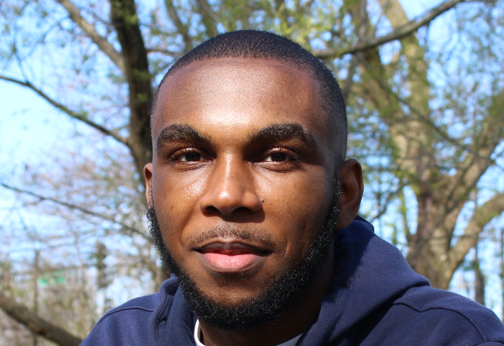

RESUME
Trevor Duggins is a Medill undergrad from New York City studying journalism and computer science.
He has been a reporter and editor for various on-campus news organizations including North by
Northwestern and WNUR News. As a student communications intern, Trevor helps manage and create
social media content for the International Relations Office along with conducting research on
collaborations with other countries and universities.